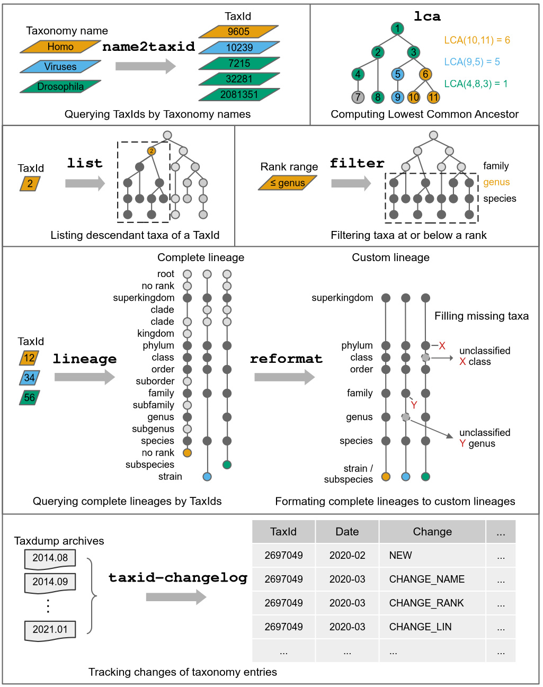

TaxonKit - A Cross-platform and Efficient NCBI Taxonomy Toolkit

- Documents: https://bioinf.shenwei.me/taxonkit (Usage, Tutorial)
- Source code: https://github.com/shenwei356/taxonkit


- Latest version:


- Taxid-Changelog: tracking all changes of taxIDss, including deletion, new adding, merge, reuse, and rank/name changes.
- Please cite:

- pytaxonkit, Python bindings for TaxonKit.
Table of Contents
Features
- Easy to install (download)
- Statically linked executable binaries for multiple platforms (Linux/Windows/macOS, amd64/arm64)
- Light weight and out-of-the-box, no dependencies, no compilation, no configuration*
- No database building, just download NCBI taxonomy data and uncompress to
$HOME/.taxonkit
- Easy to use (usages and examples)
- Supporting bash-completion
- Fast (see benchmark), multiple-CPUs supported, most operations cost 2-10s.
- Detailed usages and examples
- Supporting STDIN and (gzipped) input/output file, easily integrated in pipe
- Versatile commands
- Usage and examples
- Featured command: tracking monthly changelog of all taxIDs
- Featured command: reformating lineage into format of seven-level ("superkingdom, phylum, class, order, family, genus, species"
- Featured command: filtering taxiDs by rank range, e.g., genus or lower ranks.
Subcommands
| Subcommand | Function |
|---|---|
list |
List taxonomic subtrees (taxIDs) bellow given taxIDs |
lineage |
Query taxonomic lineage of given taxIDs |
reformat |
Reformat lineage in canonical ranks |
name2taxid |
Convert scientific names to taxIDs |
filter |
Filter taxIDs by taxonomic rank range |
lca |
Compute lowest common ancestor (LCA) for taxIDs |
taxid-changelog |
Create taxID changelog from dump archives |
version |
Print version information and check for update |
genautocomplete |
Generate shell autocompletion script |
Benchmark
- Getting full lineage for given taxIDs

Dataset
- Download and decompress
taxdump.tar.gz: ftp://ftp.ncbi.nih.gov/pub/taxonomy/taxdump.tar.gz - Copy
names.dmp,nodes.dmp,delnodes.dmpandmerged.dmpto data directory:$HOME/.taxonkit, e.g.,/home/shenwei/.taxonkit, - Optionally copy to some other directories, and later you can refer to using flag
--data-dir, or environment variableTAXONKIT_DB.
All-in-one command:
wget -c ftp://ftp.ncbi.nih.gov/pub/taxonomy/taxdump.tar.gz
tar -zxvf taxdump.tar.gz
mkdir -p $HOME/.taxonkit
cp names.dmp nodes.dmp delnodes.dmp merged.dmp $HOME/.taxonkit
Installation
Go to Download Page for more download options and changelogs.
TaxonKit is implemented in Go programming language,
executable binary files for most popular operating systems are freely available
in release page.
Method 1: Download binaries (latest stable/dev version)
Just download compressed
executable file of your operating system,
and decompress it with tar -zxvf *.tar.gz command or other tools.
And then:
-
For Linux-like systems
-
If you have root privilege simply copy it to
/usr/local/bin:sudo cp taxonkit /usr/local/bin/ -
Or copy to anywhere in the environment variable
PATH:mkdir -p $HOME/bin/; cp taxonkit $HOME/bin/
-
-
For Windows, just copy
taxonkit.exetoC:\WINDOWS\system32.
Method 2: Install via conda (latest stable version) 

conda install -c bioconda taxonkit
Method 3: Install via homebrew (latest stable version)
brew install brewsci/bio/taxonkit
Method 4: For Go developer (latest stable/dev version)
go get -u github.com/shenwei356/taxonkit/taxonkit
Bash-completion
Note: The current version supports Bash only. This should work for *nix systems with Bash installed.
Howto:
-
run:
taxonkit genautocomplete -
create and edit
~/.bash_completionfile if you don't have it.nano ~/.bash_completionadd the following:
for bcfile in ~/.bash_completion.d/* ; do . $bcfile done
Citation
If you use TaxonKit in your work, please cite the preprint.
Contact
Create an issue to report bugs, propose new functions or ask for help.
License
Starchart